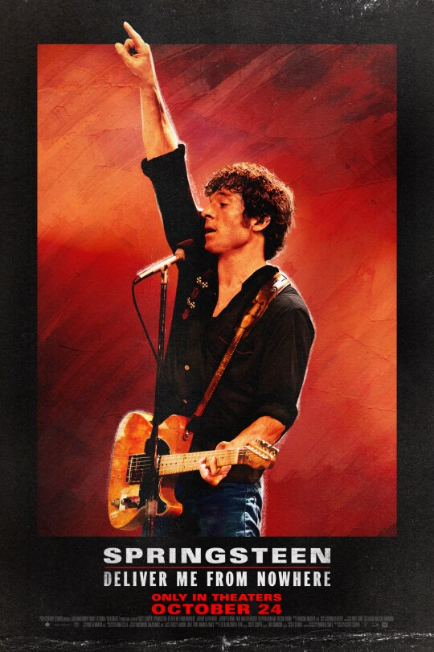

Springsteen: Deliver Me from Nowhere
Rating:PG-13
Release Date:October 24, 2025
Genre:Biography, Music
From 20th Century Studios, “Springsteen: Deliver Me from Nowhere” chronicles the making of Bruce Springsteen’s 1982 “Nebraska” album when he was a young musician on the cusp of global superstardom, struggling to reconcile the pressures of success with the ghosts of his past. Recorded on a 4-track recorder in Springsteen’s New Jersey bedroom, the album marked a pivotal time in his life and is considered one of his most enduring works—a raw, haunted acoustic record populated by lost souls searching for a reason to believe. Starring Jeremy Allen White as the Boss, the film is Written for the Screen and Directed by Scott Cooper based on the book “Deliver Me from Nowhere.” by Warren Zanes. “Springsteen: Deliver Me from Nowhere” also features Jeremy Strong as Springsteen’s long-time confidant and manager, Jon Landau; Paul Walter Hauser as guitar tech Mike Batlan; Stephen Graham as Springsteen’s father, Doug, Odessa Young as love interest, Faye; Gaby Hoffman as Springsteen’s mom, Adele; Marc Maron as Chuck Plotkin and David Krumholtz as Columbia executive, Al Teller. Arriving only in theaters October 24, 2025, the film is produced by Cooper, Ellen Goldsmith-Vein, Eric Robinson and Scott Stuber. Tracey Landon, Jon Vein and Zanes executive produce.
Written for the Screen and Directed by
Scott Cooper
Produced By
Scott Cooper, Ellen Goldsmith-Vein, Eric Robinson, Scott Stuber
Co-Produced by
Richard Mirisch, Christopher Surgent
Executive Produced by
Tracey Landon, Jon Vein, Warren Zanes
Cast
Jeremy Allen White, Jeremy Strong, Paul Walter Hauser, Stephen Graham, Odessa Young, Gaby Hoffmann, Marc Maron, David Krumholtz
VIDEO
Springsteen: Deliver Me From Nowhere | "These
Songs Matter"
Official Clip | Now Playing In Theaters
Springsteen: Deliver Me From Nowhere | "Born In the
USA"
Official Clip | Now Playing In Theaters
Springsteen: Deliver Me From Nowhere | Flash Mob
Performance at
Madison Square Park
Jeremy Allen White as Bruce Springsteen in 20th Century Studios' SPRINGSTEEN: DELIVER ME FROM NOWHERE. Photo courtesy of 20th Century Studios. © 2025 20th Century Studios.
All Rights Reserved.